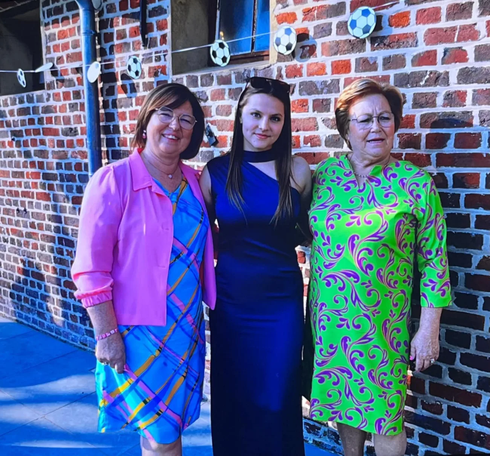
01
Feestkledij
Huwelijk, communie of jubileum. Een outfit die niemand anders heeft.
Feestkledij, trouwkledij, suitekledij en retouches, gemaakt door Isabelle in haar atelier. Jouw stijl, jouw maat, jouw ID.
Kies zelf het model, de stof en de snit. Of geef Isabelle de vrije hand: het resultaat mag er altijd zijn.

Huwelijk, communie of jubileum. Een outfit die niemand anders heeft.
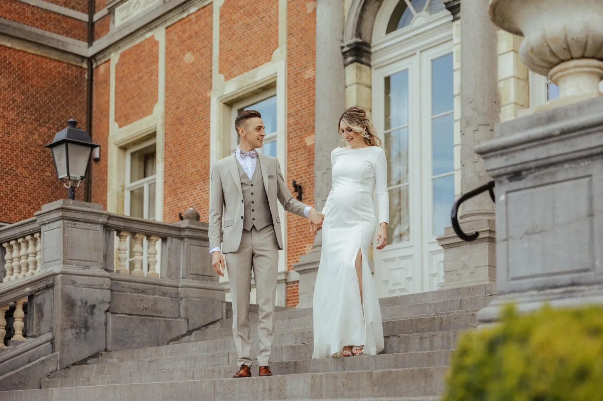
Je jurk voor de grote dag, volledig op jouw maat gemaakt.
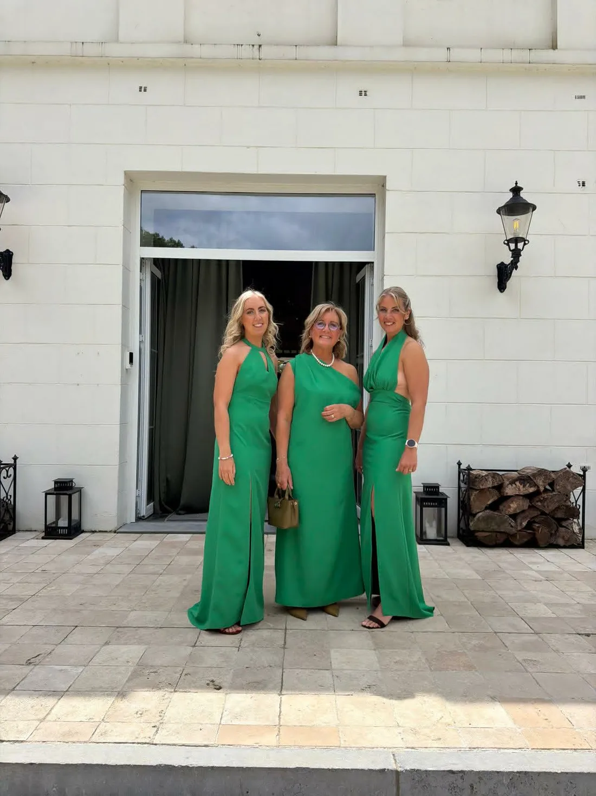
Voor de bruidsmeisjes en de rest van de suite, mooi op elkaar afgestemd.
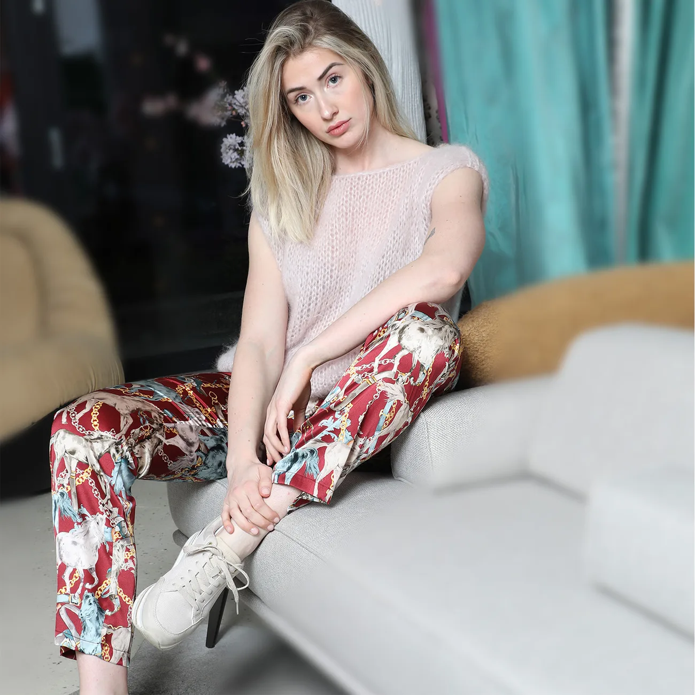
Op maat, voor een feest of om je dag wat glans te geven.
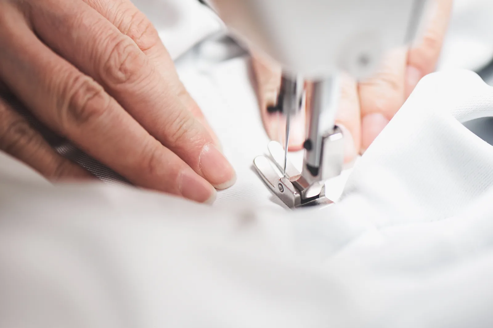
Een zoom, een rits of een broek die net te ruim zit? Isabelle zorgt dat je kledij weer past.
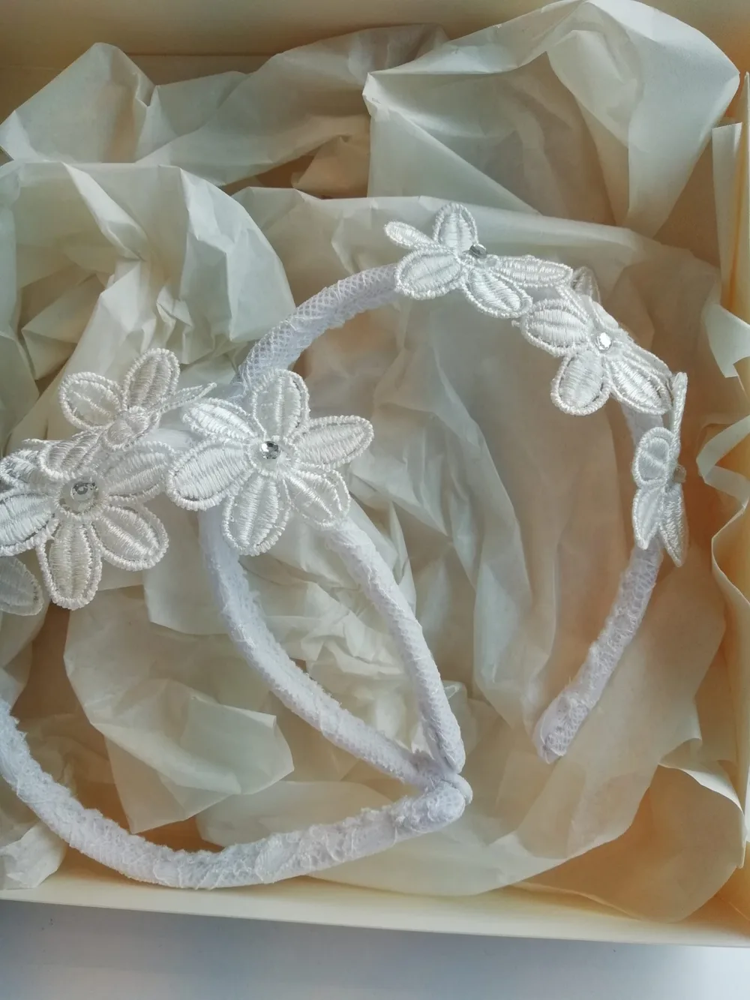
Communie, lentefeest of voorlopen op een huwelijk. Met een bijpassend accessoire erbij.
Weet je al wat je wil, of heb je nog geen idee? Allebei goed. Isabelle luistert eerst en denkt dan mee.
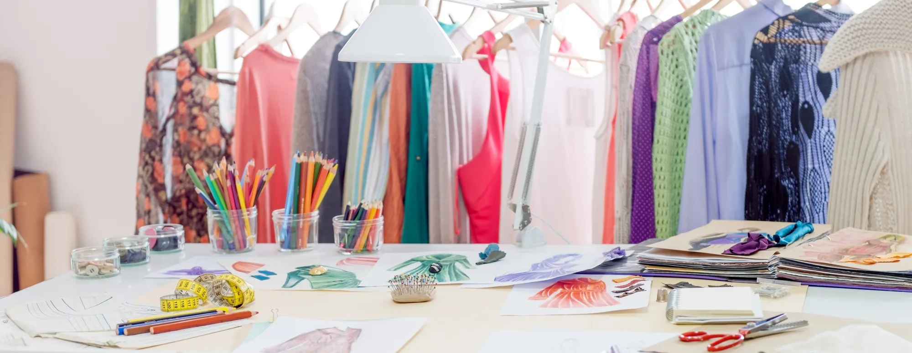
Je komt langs in het atelier. Bij een kopje koffie bespreek je je idee. Een moodboard mag je gerust meebrengen.
Isabelle haalt de stofjes boven. Je vertrekt van iets wat ze al maakte of je begint helemaal van nul.
Ze meet je op en werkt verder tot het kledingstuk voor jou helemaal af is.
Naden, zomen en knopen worden netjes afgewerkt, zodat je er lang plezier van hebt.
Trouwjurken, feestoutfits en suitekledij, door Isabelle gemaakt en door klanten gedragen.
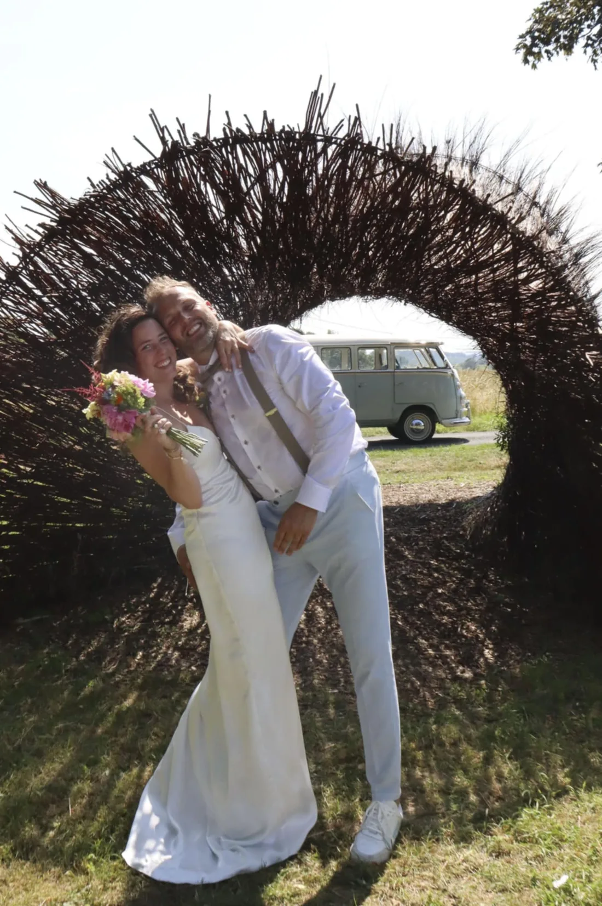
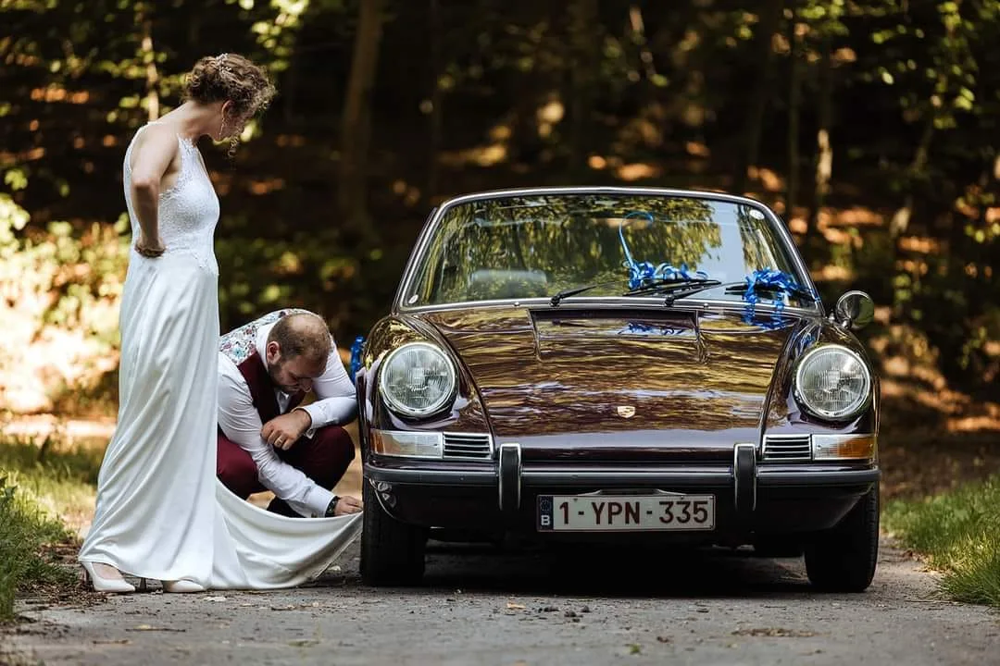
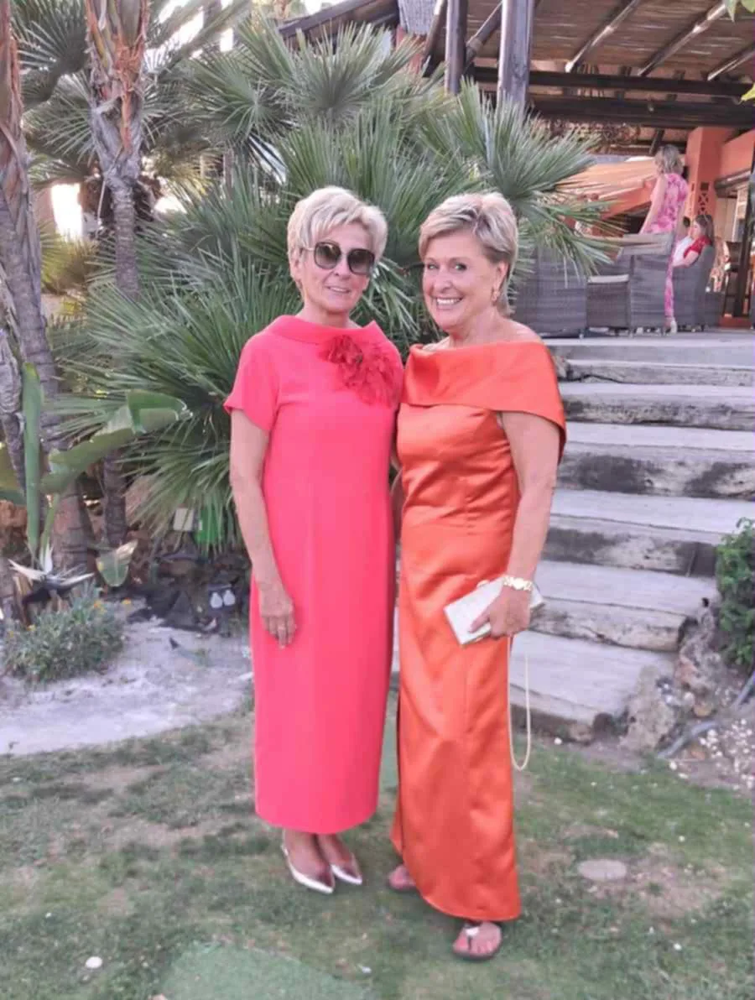
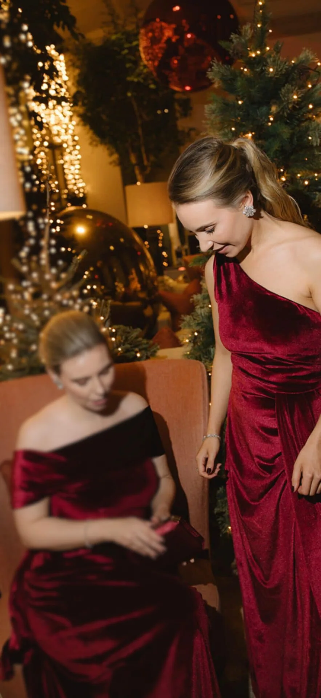
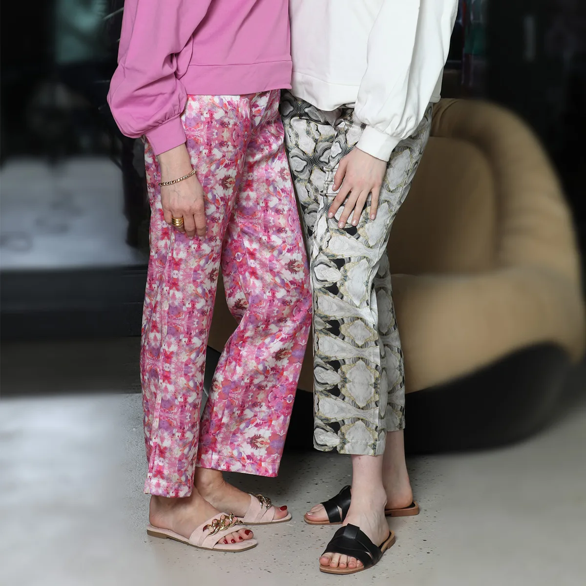
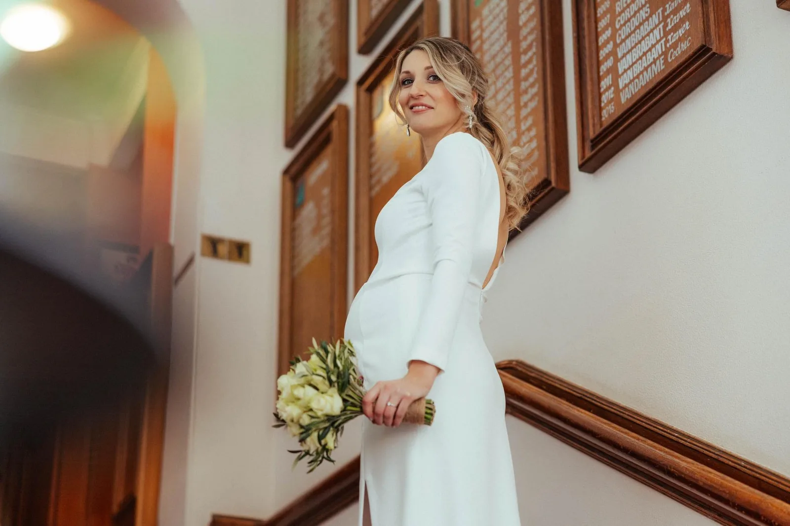
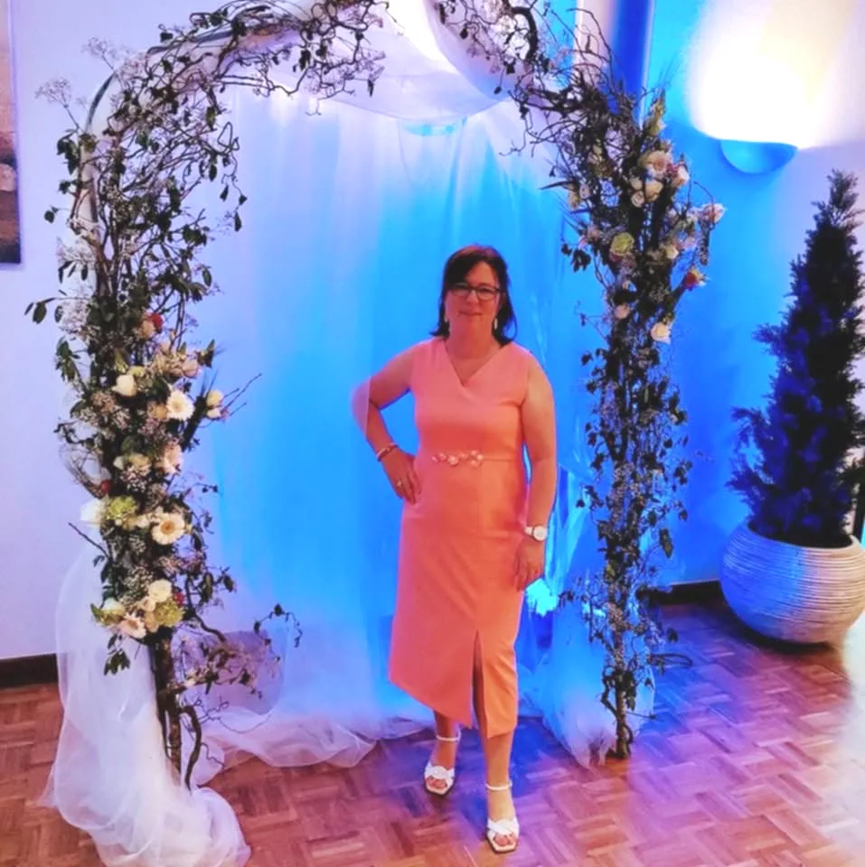
Als kind had Isabelle al een boon voor stofjes, draadjes en knoopjes. Tijdens haar studie snit en naad groeide dat uit tot een echte passie.
Nu zet ze al meer dan tien jaar nauwgezet stoffen aan elkaar, in haar eigen atelier in Kluisbergen. Kwaliteit en een propere afwerking draagt ze hoog in het vaandel.
Isabelle ontvangt je graag om je wensen te bespreken. Een afspraak is pas definitief na haar bevestiging.
Ik maakte deze demo voor jullie om te tonen wat er kan. Na een kort gesprek maak ik er iets veel persoonlijkers van, helemaal naar jullie wens.
Vrijblijvend. Ik kom langs of we bellen.
Op maat, op jullie eigen domein.
Geen voorschot. Jullie betalen pas als alles klaar is.
Hosting, domeinnaam en kleine wijzigingen, zoals nieuwe openingsuren.
Omdat een voorbeeld meer zegt dan een mail. Zo zien jullie meteen wat er kan, en het kost jullie niets.
Nee. Het gesprek is vrijblijvend. Vinden jullie het niks, dan is het daarmee gedaan.
Na ons gesprek staat jullie site binnen 10 tot 14 dagen online.
Zeker. Jullie domeinnaam kan gewoon blijven, de nieuwe site komt in de plaats van de oude.
Nee, dat doe ik op basis van ons gesprek. Eigen foto's zijn mooi meegenomen, maar niet nodig om te starten.